-
团史简介
 1922年5月5日,在中国共产党的直接关怀和领导下,中国共产主义青年团的前身一中国社会主义青年团宣告成立。青年团的诞生,揭开了中国青年运动的崭新篇章。迄今,中国共产主义青年团走过了100年风雨历程。一代又一代的中国青年,在团组织的带领下，紧紧跟随党的步伐.总是走在革命、建设和改革的前列。他们以昂扬的精神面貌、旺盛的革命斗志、无私的奉献精神.引领风气，锐意进取，为人民解放、国家富强和民族振兴的大业奉献出青春、智慧和力量,谱写了壮丽的史诗。历史证明:有着光荣传统的中国青年,是堪当重任的合格接班人和建设者;共青团组织是中国共产党足以充分信赖的助手和后备军。
1922年5月5日,在中国共产党的直接关怀和领导下,中国共产主义青年团的前身一中国社会主义青年团宣告成立。青年团的诞生,揭开了中国青年运动的崭新篇章。迄今,中国共产主义青年团走过了100年风雨历程。一代又一代的中国青年,在团组织的带领下，紧紧跟随党的步伐.总是走在革命、建设和改革的前列。他们以昂扬的精神面貌、旺盛的革命斗志、无私的奉献精神.引领风气，锐意进取，为人民解放、国家富强和民族振兴的大业奉献出青春、智慧和力量,谱写了壮丽的史诗。历史证明:有着光荣传统的中国青年,是堪当重任的合格接班人和建设者;共青团组织是中国共产党足以充分信赖的助手和后备军。 -
革命时期
-
建设时期
-
改革时期
中国社会主义青年团的创建
各地共产党早期组织成立后，开展的主要活动之一就是“建立青年团组织，组织团员学习马克思主义，参加实际斗争，为党培养后备力量”。党的重要创始人陈独秀直接领导和推动了上海、广州、武汉、长沙等地的建团工作，李大钊直接领导和推动了北京、天津、唐山、太原等地的建团工作。上海青年团早期组织是陈独秀派俞秀松等建立的。俞秀松是五四运动时期杭州学生运动的著名领袖，曾与同学一起创办浙江最早传播马克思主义的刊物《浙江新潮》，后在上海参加陈独秀领导的马克思主义研究会。上海共产党早期组织成立后，陈独秀指派组织中最年轻的成员俞秀松组建社会主义青年团。在党的领导下，1922年5月5日，中国社会主义青年团第一次全国代表大会在广州东园开幕。那一天正是马克思诞辰104周年纪念日。团一大选择在这一天召开表明中国社会主义青年团是信仰马克思主义的革命团体。
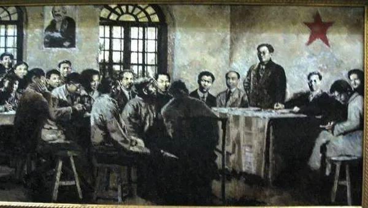
投身大革命洪流
1923年6月，共产党在广州召开三大。大会正确估计了孙中山和国民党的革命立场，决定共产党员以个人身份加入国民党，实现国共合作，建立革命统一战线。同时规定，在共产党员加入国民党时，党必须在政治上、思想上、组织上保持自己的独立性。大会要求青年团积要极带领青年团员参加国民革命。
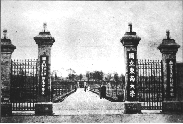
纠正取消主义和先锋主义的错误
1928年7月，在莫斯科召开的共青团第五次全国代表大会，系统总结了团四大以来的经验教训，肯定了共青团在大革命失败后，能够迅速转入秘密状态，继续坚持工作和斗争，并发挥了重要作用，肯定了共青团组织在白色恐怖中得到发展壮大，团员从1927年8月的1.5万人发展到1928年7月的7.5万人，团员成分由以学生青年为主发展成以工农青年为主，肯定了共青团在共产党的领导下及时消除了先锋主义和取消主义的影响。大会选出了共青团第五届中央委员会，关向应任团中央书记。
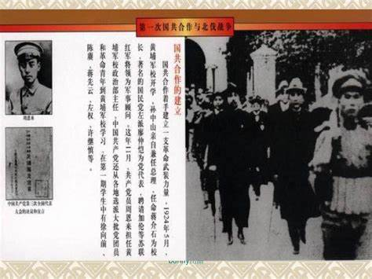
为抗日救国改造共青团
1935年，国际形势出现急剧变化，一些帝国主义国家为重新瓜分世界，准备发动侵略战争，世界形势面临严重危机。7月，共产国际七大决定建立世界人民反法西斯统一战线，要求各国共产党和共青团在争取青年方面有一个根本的转变。随后召开的青年共产国际六大根据共产国际七大的精神，决定建立世界青年反法西斯统一战线，号召全世界青年为民主、自由、和平而战，并要求各国改造共青团，使之成为广大青年群众的组织。青年共产国际指示中国共青团“要尽量使青年积极参加全民抗日救国的斗争，以建立全体青年的群众运动和组织”。共产国际七大和青年共产国际六大的精神通过不同渠道传到国内。中共中央和团中央按照共产国际的要求，开始了改造共青团的试验。
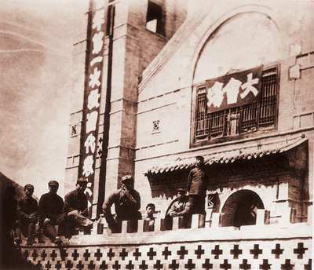
毛泽东为青年团命名
1948年9月，中央政治局会议作出在1949年上半年正式建立新民主主义青年团的决定。此后，中央青委同志着手起草团章和建立新民主主义青年团决议。12月27日，毛泽东审阅《关于建立新民主主义青年团的决议》《中国新民主主义青年团团章（草案）》后致信刘少奇、朱德、周恩来、任弼时、冯文彬：“关于青年团的决议和团章已看过。写得简明扼要，完全可用。
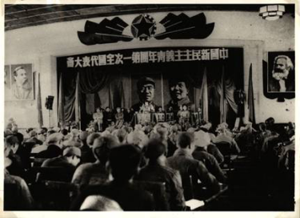
巩固新生政权、恢复国民经济中的青年团
新中国继承了一个落后的、千疮百孔的烂摊子，国家面临着很多困难和考验。1950年6月，中央人民政府委员会颁布《中华人民共和国土地改革法》，在占全国人口大多数的新解放区农村开展了轰轰烈烈的土地改革运动。8月，团中央召开全国农村青年工作会议，规定了青年团在新解放区农村的主要任务是：“全力发动青年农民与全体农民一道参加土地改革和减租、反霸的斗争。”根据党的要求和团中央的部署，新解放区各级团组织把发动青年参加土地改革作为中心工作。他们积极配备和训练团干部，组织学习土改文件，参加土改工作队，宣传土改政策。一些城市青年也响应党的号召，到农村参加土改和反霸斗争。到1952年年底，全国除部分少数民族地区外，土地改革基本完成。
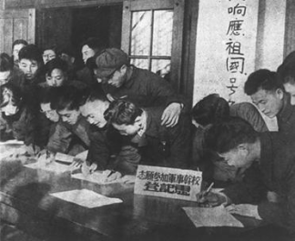
大规模经济建设时期的青年突击队
为加快社会主义建设的步伐，1953年6月，中央政治局制定了党在过渡时期的总路线，并开始实施第一个五年计划，全国进入大规模经济建设时期。青年突击队队员以拼搏奉献的精神，用181个工日完成了原计划用478个工日支工业馆拱顶大梁模板的任务，提高生产效率146%。木工青年突击队的出色表现，给全工区青年树立了榜样。到2月中旬，工区又相继建立了瓦工、抹灰工、电气工、水暖工、混凝土工等6支青年突击队。这些青年突击队在生产中发挥了积极带头作用，出色完成了生产任务。青年突击队的出现及其在基本建设中发挥的作用，得到了党中央、团中央、北京市委市政府的高度重视和肯定。
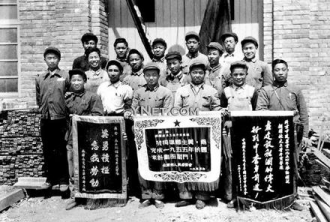
团干部成长的摇篮——中央团校
创办中央团校是为重建青年团做准备。1948年5月，任弼时跟随毛泽东从陕北战场转战到河北平山县后继续领导青年工作。他对中央青委负责同志说：“建团的开始，一定要调集一批好的青年干部来做这项工作。同时，要搞青年干部的训练。"就这样，为培养团的青年干部，中央青委开始着手筹建中央团校。中央青委从山东、河北、山西等老解放区抽调了一些有青年工作经验的干部作为建校骨干，同时制定了《教育计划》。《教育计划》明确了办团校的目的——培养具有新思想、新作风的青年团干部，准备担任城乡的建团工作，以确立新式青年团的坚实基础。《教育计划》还对教学内容、学习期限、教学方法、学校作风、教学组织、学员数量及来源等作了具体安排。新中国成立后，中央团校迁入北京，校部和各班部分别设在市区东四一带的民用住宅里，1954年夏，迁入西郊海淀区新校舍。
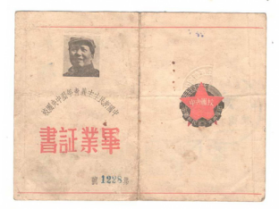
青年团历史上的第二次改名
大会总结了几年来青年团的工作，明确了青年团今后工作的方针任务，表示要在党的领导下，为完成党的八大所提出的尽可能迅速地把我国建设成为一个伟大的社会主义国家这个历史任务而奋斗。大会认为，青年的任务可以用三个口号来概括，那就是积极劳动，努力学习，加强团结，即“劳动、学习、团结”六字方针。鉴于新民主主义革命在我国绝大部分地区早已完成，社会主义革命也已取得决定性的胜利，广大团员正在为把我国建设成为一个伟大的社会主义工业强国而奋斗，并且把最终实现共产主义作为崇高理想，大会通过了《关于将中国新民主主义青年团改名为中国共产主义青年团的决议》。这是青年团历史的第二次改名。
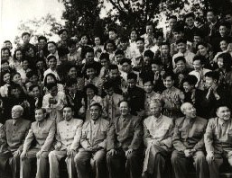
学雷锋活动的兴起
1963年2月，有感于雷锋一切从人民利益出发，全心全意为人民服务的精神，《中国青年》编辑部给毛泽东写了一封信，希望他能为和平时期的青年楷模雷锋题词。 毛泽东阅读了报纸上有关雷锋事迹的报道，认为“雷锋值得学习”。他对秘书说：“学雷锋不是学他哪一两件先进事迹，也不只是学他的某一方面的优点，而是要学他的好思想、好作风、好品德；学习他长期一贯地做好事，而不做坏事；学习他一切从人民的利益出发，全心全意为人民服务的精神。当然，学雷锋要实事求是，扎扎实实，讲究实效，不要搞形式主义，不但普通干部、群众要学雷锋，领导干部要带头学，才能形成好风气。”毛泽东的这番话不仅指出了学雷锋的方法，而且指明了雷锋身上最本质的东西，特别是指出了学雷锋的方向。
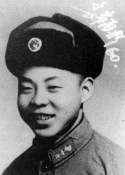
团中央书记处被改组
1967年1月，团中央机关的“革命造反联络总部”夺了团中央临时书记处的权。从此，共青团的系统领导完全中断，直到1978年5月共青团十大筹备委员会成立。 团中央书记处被改组后，中央文革小组的人继续攻击共青团，污蔑共青团“修到家了”，是“生产团”“娱乐团”“全民团”，表示必须彻底“砸烂”。于是，在全国范围内掀起一股摧旧团的黑浪，大批团干部遭到迫害，大批青年先进集体和青年模范人物受到株连，各级团组织遭到严重破坏。
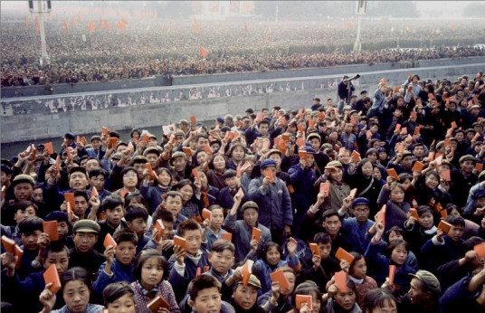
在拨乱反正中召开共青团十大
1976年10月，粉碎“四人帮”，结束了长达十年，给党、国家和各族人民带来严重灾难的“文化大革命”，从危难中挽救了党，挽救了国家，挽救了中国的社会主义事业，为党和国家进入新的历史时期创造了前提。粉碎“四人帮”也使共青团获得了新生。 “文化大革命”结束后，党领导全国人民开展揭发、批判、清查江青反革命集团的斗争，恢复党和国家的正常秩序，得到全国人民，包括广大团员青年的拥护。各地团组织在党委的领导下，揭批江青反革命集团污蔑、诽谤、摧残共青团以及毒害青少年的罪行团十大筹委会成立后做了很多工作，为大力培养团干部，恢复了中央团校，为做好舆论工作，复刊了《中国青年》《中国青年报》，经请示中央撤销了全国各类学校的红卫兵组织。 10月，共青团十大召开。出席大会的2000多名代表代表着全国各个地区、各条战线的基层团组织和4800万名团员。
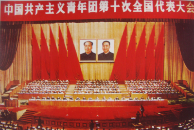
在新长征中造就一代新青年
“新长征”最早是胡耀邦提出来的。1975年10月，主持中国科学院工作的胡耀邦在中国科学院团委举办的纪念红军长征胜利40周年大会上，发表了题为《实现四个现代化是新的长征》的讲话。在讲话中，胡耀邦提出了进行“新长征”的口号。他说：“这个长征是什么呢？这就是毛主席号召我们的，要求我们的，要在本世纪末实现四个现代化，把我们可爱的祖国建设成为伟大的社会主义强国。” 1978年12月，党的十一届三中全会从根本上冲破了长期以来“左”倾错误的严重束缚，果断地把工作重点转移到社会主义现代化建设上来。此后，共青团跟随党的步伐，逐步打开了全新的工作局面。 这一时期，团中央书记处提出“以四化为中心把团的工作活跃起来”的口号，以纠正过去团的工作“以阶级斗争为纲”，青年教育“以阶级斗争为主课”的错误方针，摆脱了“左”的思想束缚，实现了指导思想上的拨乱反正。
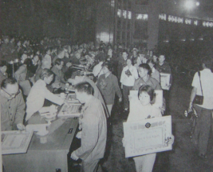
受教育、长才干、作贡献——大学生社会实践活动兴起
1982年2月，受国家农委的委托，北京大学等高校155名大学生在寒假期间就农村实行家庭联产承包责任制以来各方面的情况进行了“百村调查”， 使学生们亲身感受到改革开放政策给社会主义建设带来的勃勃生机。学生们撰写的157篇调查报告也得到农委的肯定。 此后，每年暑期，有超过百万名学生参与到各级“三下乡”社会实践活动中，奔赴祖国的大江南北、乡村田野和城镇社区，广泛开展政策宣讲、教育帮扶、医疗服务、科技支农、文艺演出、法律援助、环境保护等实践服务活动，充分展现了当代学生“与祖国紧密结合，为人民奉献青春”的精神风貌。
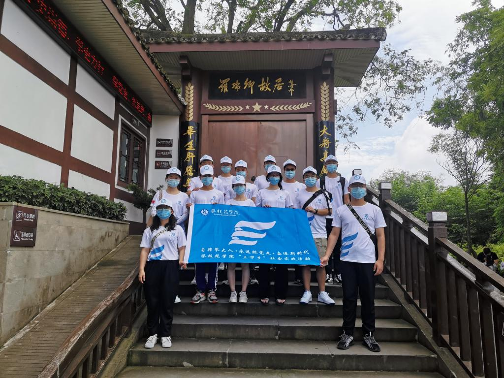
工作到支部，全团抓落实
党的十二大以后，经济体制改革全面展开。农村的家庭联产承包责任制迅速推向全国，农业生产终于摆脱长期停滞的困境。城市的经济体制改革试点逐步扩大，要求全面改革的呼声日益强烈。而当时，共青团的一些基层组织不同程度地存在组织生活不经常，工作不活跃的问题。切实加强团的基层组织建设、全面活跃团的工作尤为迫切。 1984年10月，团中央在福建龙海县召开的共青团全国基层会议，提出了适应经济改革，探索自身改革，加强基层建设，焕发基层活力的要求。会议从社会经济和政治生活的变革出发，第一次将改革引入共青团建设理论，推动了共青团基层建设从理论到实践的重大突破。此次会议成为共青团基层建设史上的里程碑。
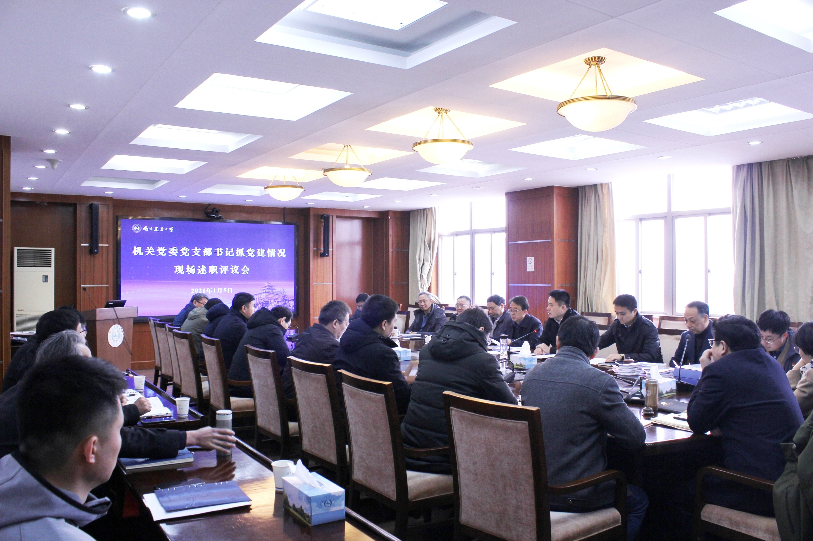
惠及贫困孩子的希望工程
在改革开放的1988年，团十二大通过《关于共青团体制改革的基本设想》。在推进共青团体制改革的工作进程中，团中央书记处决定筹办中国青少年发展基金会，致力在教育、科技、文化、体育、卫生、环境保护等领域发展青少年事业，促进青少年健康成长。 1989年3月8日，中国青少年发展基金会获得民政部批准。基金会如何起步？有同志的回忆起在团中央时下基层调研的情况。那次调研，团中央工作团用两个月的时间，走遍广西柳州地区所有的少数民族贫困县。了解到的情况令他们震撼，新中国成立后金秀瑶族自治县2000多人的共和村没有出过一名初中生，小学辍学率高达90％；三江侗族自治县富禄乡的16个行政村中8个村没有一名初中生。 贫困地区贫困家庭的学龄儿童不能走进学校读书的境况引起大家极大的同情和忧虑，孩子是祖国的未来和希望啊！ 基金会的项目就从救助贫困地区失学儿童、投身社会公益事业起步！基金会的同仁在起步的项目上达成共识，并给它取了一个寓意深刻的名字——希望工程。因为这个项目是一个工程，既充满着希望，又十分艰巨。 团中央书记处经过慎重地研究讨论，最终作出在全国实施希望工程的决定。 1989年10月30日，中国青少年发展基金会在北京召开新闻发布会。他们向海内外庄严宣布：以救助贫困地区失学少年，让千千万万因家庭贫困而失学的孩子重返校园为主旨的希望工程开始实施。
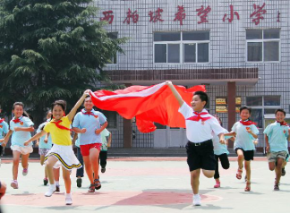
“青年马克思主义者培养工程”启动
2006年，胡锦涛总书记在党的十六届六中全会上的讲话中提出：“要从赢得青年、赢得未来的高度，抓好大学生的理论学习，深入推进马克思主义中国化的最新成果进教材、进课堂、进头脑工作，让青年知识分子了解和相信党的理论，在广大青年中培养一大批坚定的马克思主义者。”为贯彻这一重要指示精神，在广大青年中培养一大批用马克思主义中国化最新成果武装的马克思主义者，2007年5月，团中央、全国学联在北京召开全国大学生“学习科学发展观，共建和谐社会”汇报交流会。团中央书记处第一书记胡春华在讲话中，勉励青年学生深入学习党的理论创新成果，努力成长为坚定的青年马克思主义者。以汇报交流会为标志，“青年马克思主义者培养工程”启动，团中央、全国学联组建的中国大学生骨干培养学校同时启动。
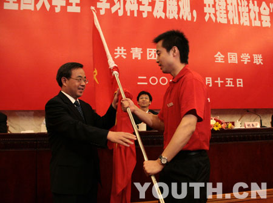
“我的中国梦”主题教育实践活动
2012年11月29日，第十八届中共中央领导集体在国家博物馆参观《复兴之路》展览时，习近平总书记深情地说：“现在，大家都在讨论中国梦，我以为，实现中华民族伟大复兴，就是中华民族近代以来最伟大的梦想。”习近平总书记为民族复兴大业赋予了“中国梦”的概念。中国梦的提出，极大地激发了人民群众，包括广大青少年实现民族复兴的内心渴望和高涨热情。 “我的中国梦”主题教育实践活动在各地团组织和青少年中引起热烈反响，已成为共青团开展中国特色社会主义和中国梦宣传教育的一项品牌活动。今后，团中央还将围绕“我的中国梦”主题，不断推出更多内容丰富、形式生动的活动载体，继续深化“奋斗的青春最美丽”分享团走基层、“红领巾相约中国梦”等主题活动，引导和激励更多青少年敢于铸梦、勇于追梦，积极帮助青少年奋斗圆梦，在全面建成小康社会、实现中华民族伟大复兴的中国梦的新征程上谱写新的青春篇章！
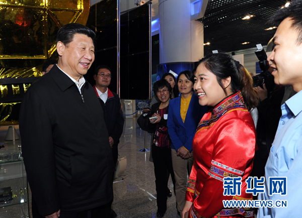
中国共产主义青年团第十八次全国代表大会
2018年6月26日至29日中国共产主义青年团第十八次全国代表大会，经党中央批准在北京召开。中国特色社会主义进入新时代，民族伟大复兴号角催人奋进。8000多万共青团员和广大青年聚焦于此，他们共同学习贯彻习近平新时代中国特色社会主义思想和党的十九大精神，汇聚决胜全面建成小康社会、全面建设社会主义现代化国家的青春力量，共同立下不忘初心跟党走、为党和人民不懈奋斗的庄严誓言。
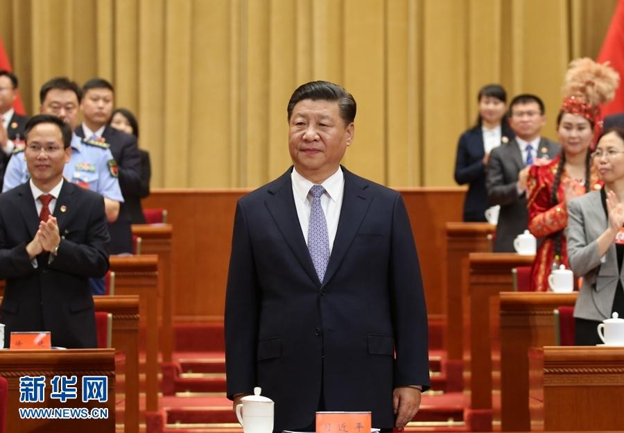